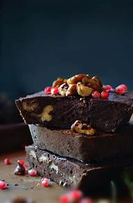

Chocolate or cocoa is a food made from roasted and ground cacao seed kernels that is available as a liquid, solid, or paste, either on its own or as a flavoring agent in other foods. Cacao has been consumed in some form since at least the Olmec civilization (19th–11th century BCE),[1][2] and later Mesoamerican civilizations also consumed chocolate beverages before being introduced to Europe in the 16th century.[3]
The seeds of the cacao tree have an intense bitter taste and must be fermented to develop the flavor. After fermentation, the seeds are dried, cleaned, and roasted. The shell is removed to produce cocoa nibs, which are then ground to cocoa mass, unadulterated chocolate in rough form. Once the cocoa mass is liquefied by heating, it is called chocolate liquor. The liquor may also be cooled and processed into its two components: cocoa solids and cocoa butter. Baking chocolate, also called bitter chocolate, contains cocoa solids and cocoa butter in varying proportions without any added sugar. Powdered baking cocoa, which contains more fiber than cocoa butter, can be processed with alkali to produce Dutch cocoa. Much of the chocolate consumed today is in the form of sweet chocolate, a combination of cocoa solids, cocoa butter, or added vegetable oils and sugar. Milk chocolate is sweet chocolate that additionally contains milk powder or condensed milk. White chocolate contains cocoa butter, sugar, and milk, but no cocoa solids.
Chocolate is one of the most popular food types and flavors in the world, and many foodstuffs involving chocolate exist, particularly desserts, including cakes, pudding, mousse, chocolate brownies, and chocolate chip cookies. Many candies are filled with or coated with sweetened chocolate. Chocolate bars, either made of solid chocolate or other ingredients coated in chocolate, are eaten as snacks. Gifts of chocolate molded into different shapes (such as eggs, hearts, and coins) are traditional on certain Western holidays, including Christmas, Easter, Valentine's Day, and Hanukkah. Chocolate is also used in cold and hot beverages, such as chocolate milk and hot chocolate, and in some alcoholic drinks, such as creme de cacao.
Although cocoa originated in the Americas, West African countries, particularly Côte d'Ivoire and Ghana, are the leading producers of cocoa in the 21st century, accounting for some 60% of the world cocoa supply.